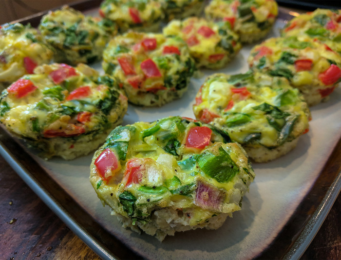
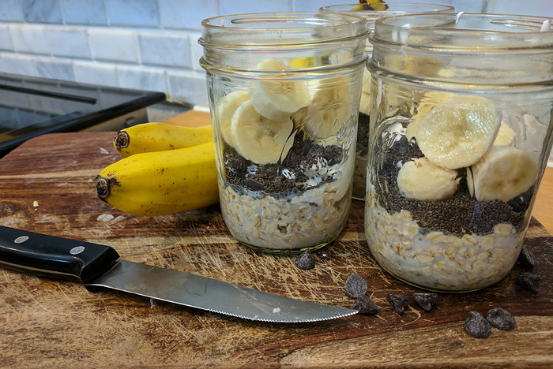
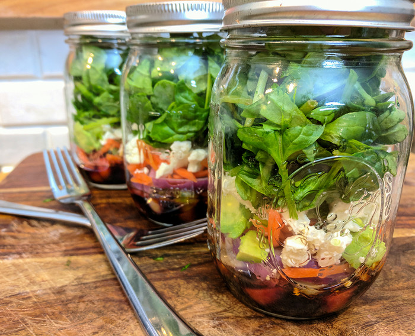

GYM TOWN
3 Outstanding Meal-Prep Recipes
Meal prep recipes vary based on fitness goals and food preferences, but if you're looking for solutions that take you from morning to night, you can't beat these breakfast, lunch, and dinner basics.

Meal prepping isn't for slackers. Just like it takes time, energy, and planning to commit to a fitness routine, you need to make the same commitment to meal prepping. With sustained effort and the right recipes, though, you can fast-track your success—without having to eat the same tired old chicken and broccoli day in and day out. Here are seven recipes to keep your taste buds—and your waistline—happy.
These egg-and-veggie muffins are a high-protein, easily-transportable food that doubles as breakfast with a side of fruit and coffee, or as a grab-and-go snack between meals. If you use a standard muffin tin, you can make at least 12 muffins at a time, each of them a little bit different to keep your meals interesting.
Overnight oats are an easy way to prep your breakfast for a week while ensuring a good dose of fiber, protein, and whole grains. You can easily adjust the additional ingredients for a variety of flavors, like replacing the chocolate chips with a tablespoon of peanut butter per jar, or switching out the banana slices for your favorite fresh berry.
Salads can be tough to transport in traditional containers because greens get soggy when pre-mixed with dressings. But by layering salad ingredients in a Mason jar, you can keep your greens separate from the dressing to preserve their crispness for lunchtime. Again, mix-and-match salad ingredients to your heart's content. Switch out the carrots and avocado for artichokes, roasted red peppers, and Kalamata olives. Use ranch dressing and layer your salad with black beans, corn, and cheddar cheese for a southwestern flair. You can even add sweet ingredients, like strawberries or grapes, or substitute kale or romaine lettuce for fresh spinach. Make sure any cooked ingredients are cool before adding to jar. Otherwise they will wilt the greens.
